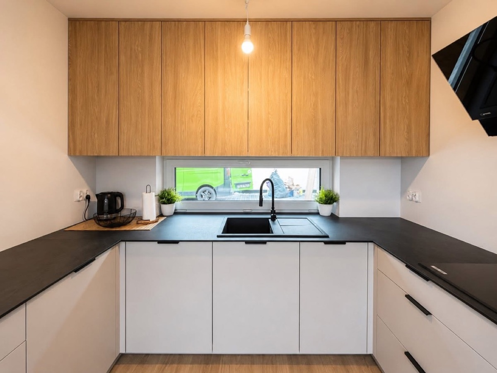
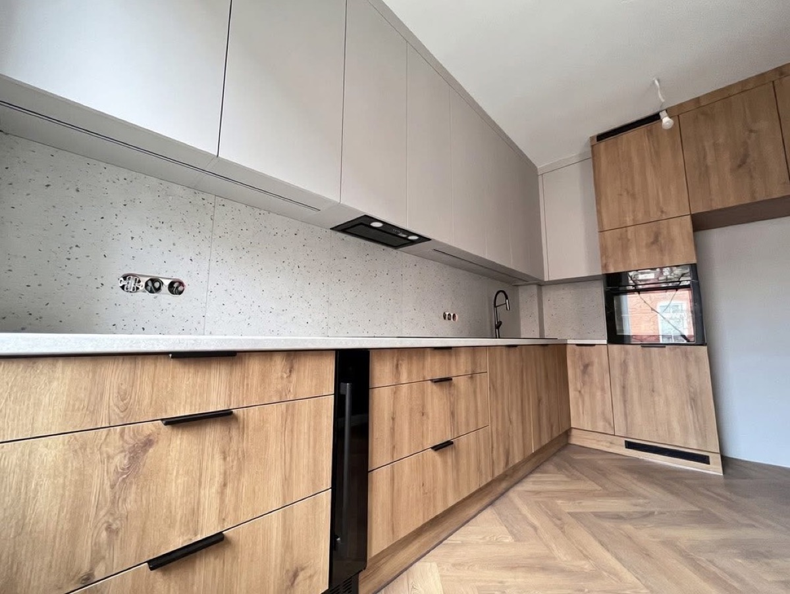
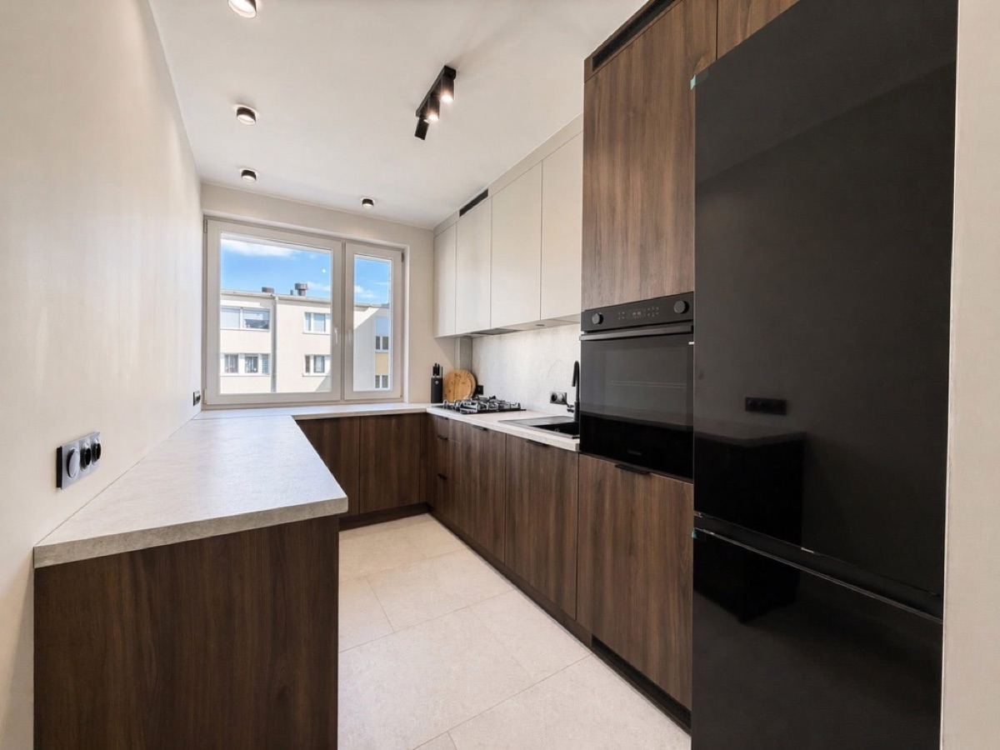
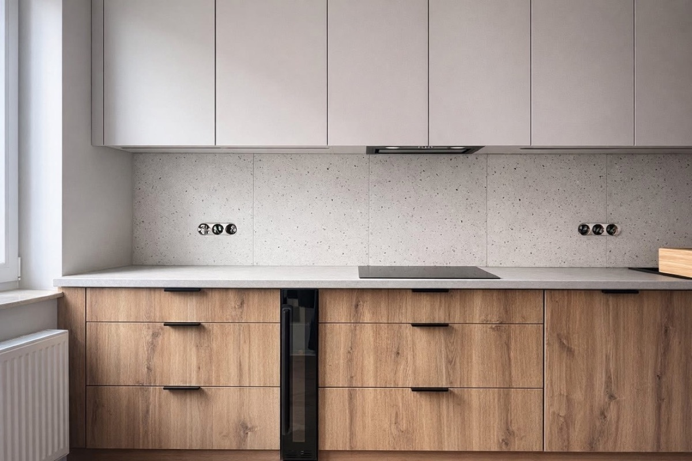
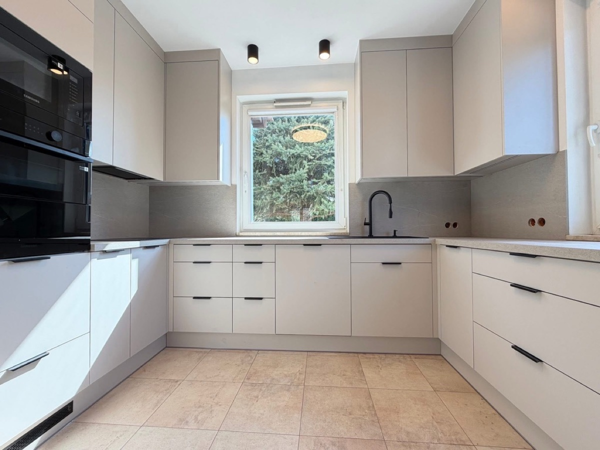
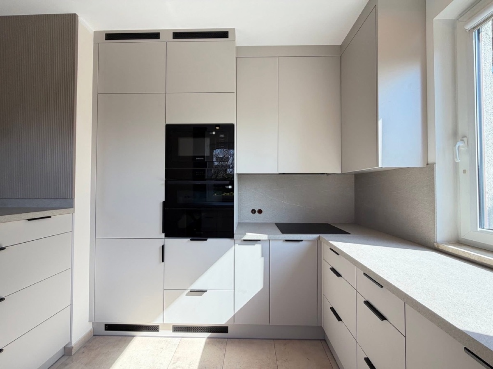
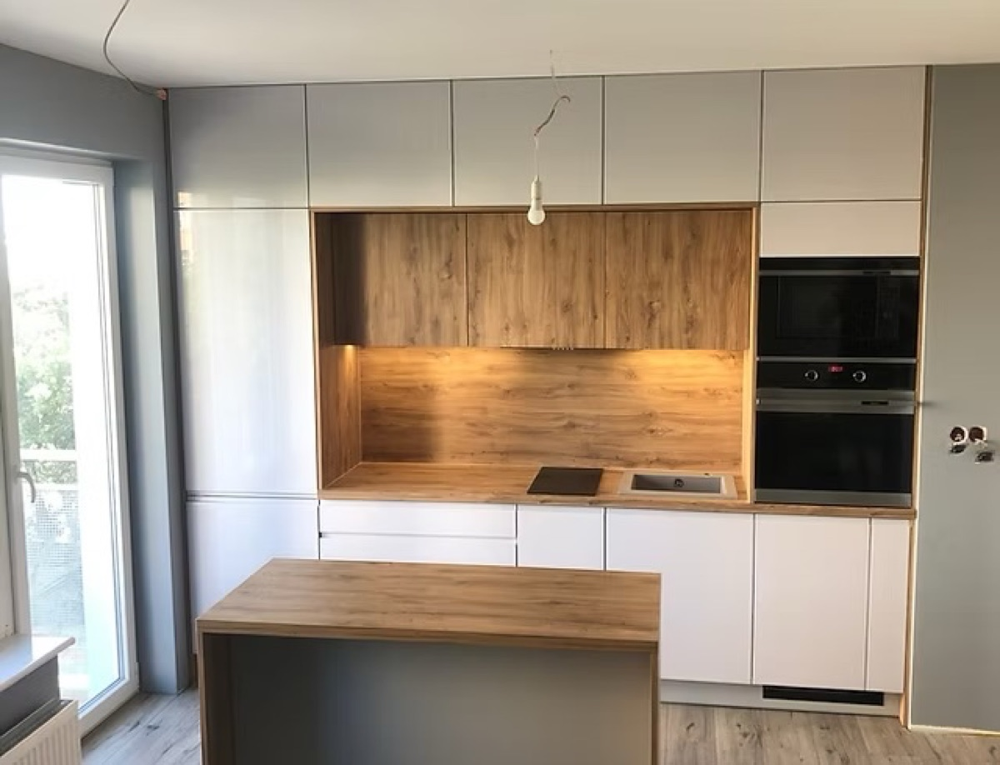

Apartament — Promenady Wrocławskie
Układ U z panoramicznym oknem pasowym. Matowy dąb naturalny, biel i czarne blaty kompozytowe.
Projekt, produkcja CNC i montaż dla Twojego mieszkania we Wrocławiu. Od pomiaru do oddania kluczy w około 3 tygodnie. Bez 5 firm do ogarnięcia.
* Realny czas od dnia pomiaru do oddania kluczy. Dokładny termin potwierdzamy przy akceptacji projektu — zależy od aktualnej kolejki naszego partnera CNC. Rynkowy standard: 8–12 tygodni.
Odchyłki 2–3 cm na 3 metrach to standard. Stolarz z katalogu nie ma jak tego uwzględnić. Efekt: szczeliny, blendy na siłę, kompromisy.
Projektant, stolarz, monter, elektryk, hydraulik. Każdy zwala winę na poprzedniego. Ty stoisz w środku i tłumaczysz każdemu wszystko.
Gniazdko za szafką, rura odpływu w złym miejscu, niski parapet. Wychodzą dopiero na montażu — gdy jest za późno na zmiany.
Bierzemy to wszystko na siebie. Ty dajesz nam rzut i klucze. My oddajemy gotową kuchnię.
Pełna obsługa od rzutu dewelopera po ostatnią śrubkę. Idealne dla mieszkań w stanie deweloperskim.
Garderoby, szafy wnękowe, zabudowa łazienki, pralni czy korytarza. W jednym spójnym języku z kuchnią.
Nie jesteś jeszcze gotów na pełną realizację? Zamów konsultację — kwota odejmowana od późniejszego projektu.
Wykończenie mieszkania we wrocławskim stanie deweloperskim to stres i wyścig o ułamki centymetrów. My bierzemy ten ciężar na siebie. Prowadzimy Cię przez ten proces w duecie, rozdzielając to, co piękne, od tego, co technologiczne.
Estetyka, która oddycha. Opowiesz nam, jak spędzasz poranki, a my zadbamy o kompozycje faktur, barwy materiałów i czystą ludzką wygodę na co dzień.
Język wektorów. Każda idea przeliczana jest na twarde parametry w profesjonalnych środowiskach 3D CAD/CAM. Bezlitośnie eliminujemy kolizje instalacyjne.
Maszyny CNC u naszych partnerów pod miastem tną z niedoścignioną precyzją formatu. Bez kurzu stolarni — 100% naszej uwagi idzie w obsługę Twojego zlecenia.
Lucyna i Michał — rodzeństwo, które dorastało wśród projektów rodziców architektów. Z rzutami wnętrz oswajaliśmy się wcześniej niż z pisaniem. Szacunek do proporcji mamy we krwi.
Wnosi wrażliwość, układ i wyczucie materiału. Pomoże Ci wybrać paletę, fakturę i sprytne rozwiązania funkcjonalne. To z nią ustalisz, jak Twoja kuchnia ma wyglądać i pracować na co dzień.
Przekłada wizję na język CAD/CAM i nadzoruje produkcję u partnerów. Odpowiada za bezkolizyjny model 3D, pliki produkcyjne i sam montaż. Z nim ustalisz harmonogram i techniczne realia.
Cały proces zajmuje około 3 tygodnie od dnia pomiaru do oddania kluczy. Bez niespodzianek terminowych.
CZAS: 1 dzień · bezpłatnie
Przyjeżdżamy do Ciebie z próbnikami materiałów — na inwestycję, do obecnego mieszkania lub na kawę. Mierzymy z natury, słuchamy, proponujemy rozwiązania. Wychodzimy z gotową koncepcją wstępną.
CZAS: 2–3 dni
Przekładamy pomiary i Twoje wybory na bezkolizyjny model 3D. Pokazujemy Ci finalne wizualizacje, kolory i warianty układu. Zatwierdzasz — przechodzimy do produkcji.
CZAS: do 2 tygodni
Pliki produkcyjne trafiają do naszego partnera CNC pod Wrocławiem. Frezowanie, oklejanie, okucia Blum/Hettich. Ty nie martwisz się o zamówienia ani logistykę — to nasza rola.
CZAS: 4–5 dni
Montujemy, dopasowujemy do realiów ścian, robimy poprawki. Sprzątamy. Oddajemy gotową do użytku przestrzeń.
Każda kuchnia to inna inwestycja, inny rzut i inne wyzwanie deweloperskie. Zobacz, jak inżynieryjny spokój porządkuje chaos stanu surowego.

Układ U z panoramicznym oknem pasowym. Matowy dąb naturalny, biel i czarne blaty kompozytowe.

Krem + dąb + terrazzo na ścianie. Push-to-open zamiast uchwytów, jodełka klasyczna na podłodze.

Wąski układ L w średnim metrażu. Ciemny orzech + krem + czarna kolumna lodówkowa Samsung.

Frezowane uchwyty zamiast tradycyjnych, płyty laminowane dąb + lakierowane jasne fronty. Spoty w kolorze frontu.

Klasyczny układ U, monolityczna kremowa zabudowa. Piekarnik Samsung w pionowej kolumnie, okno bez parapetu.

Wysoka zabudowa pionowa, kratki wentylacyjne ukryte we frontach. Pełna minimalizacja uchwytów.

Kuchnia otwarta z wyspą. Dąb naturalny we wnęce + biel. Ukryta wentylacja wyciągowa w blacie.
„Czekaliśmy 4 lata na nasze mieszkanie. Bałam się, że na koniec zepsuje to byle stolarz. Lucyna i Michał zdjęli ze mnie cały stres — przyszli z próbnikami, doradzili, zamontowali. Oddali nam kuchnię, do której tylko wniosłam talerze."
„Współpraca na poziomie. Projekt 3D był tak dokładny, że na montażu nie było ŻADNYCH niespodzianek. Michał wyłapał kolizję z hydrauliką zanim deweloper zdążył nas oszukać. Polecam."
„Brak showroomu okazał się największą zaletą. Wybierałam fronty w swoim własnym świetle, przy oknie kuchennym. Dopiero wtedy zrozumiałam, jak bardzo zmieniają się kolory. Dziękuję!"
Realizacje pod klucz startują od ok. 25 000 zł za małe kuchnie w kawalerkach. Typowy budżet apartamentowy mieści się w przedziale 40 000–70 000 zł. Dokładną wycenę przygotowujemy w 5 dni roboczych od pomiaru — bez zaliczki i bez zobowiązań.
Około 3 tygodnie od dnia pomiaru do oddania kluczy: 1 dzień pomiar i próbki, 2–3 dni projekt 3D CAD, do 2 tygodni produkcja u partnera CNC, 4–5 dni montaż i poprawki. To znacznie szybciej niż rynkowy standard (8–12 tygodni), bo jesteśmy małą pracownią bez kolejki klientów i utrzymujemy stałą współpracę z partnerem CNC. Dokładny harmonogram potwierdzamy przy akceptacji projektu — zależy od aktualnej kolejki CNC. Terminy są wpisane w umowę.
Nie — i to świadoma decyzja. Zamiast zmuszać Cię do stania we wrocławskich korkach, działamy jak mobilna pracownia. Przywozimy próbniki prosto do Twojego mieszkania. Kolor frontu i fakturę blatu powinieneś wybierać w naturalnym świetle własnego apartamentu, a nie w sztucznie oświetlonym sklepie.
To nasz problem, nie Twój. Bierzemy pełną odpowiedzialność za pomiary, projekt i montaż. Jeśli ściana dewelopera okaże się krzywa, my organizujemy poprawki, docinamy blendy i doprowadzamy realizację do perfekcji.
Skupiamy się na projekcie, obsłudze i montażu. Samo cięcie i okleinowanie płyt zlecamy wyspecjalizowanym centrom CNC pod Wrocławiem. Dzięki temu masz dostęp do każdego materiału na rynku, a Twój budżet idzie w jakość, nie w utrzymanie hali.
5 lat gwarancji na zabudowę, 2 lata na okucia i mechanizmy (zgodnie z gwarancją producenta — Blum, Hettich). Poprawki po montażu robimy w ramach umowy, bez dodatkowych opłat.
Działamy w promieniu 30 km od Wrocławia: Bielany, Kąty Wrocławskie, Oleśnica, Trzebnica, Siechnice. Dalej tylko wyjątkowo, po wcześniejszej rozmowie.
Zostaw rzut dewelopera i numer telefonu. Odzwonimy w ciągu 24h, żeby umówić bezpłatny pomiar u Ciebie na inwestycji.